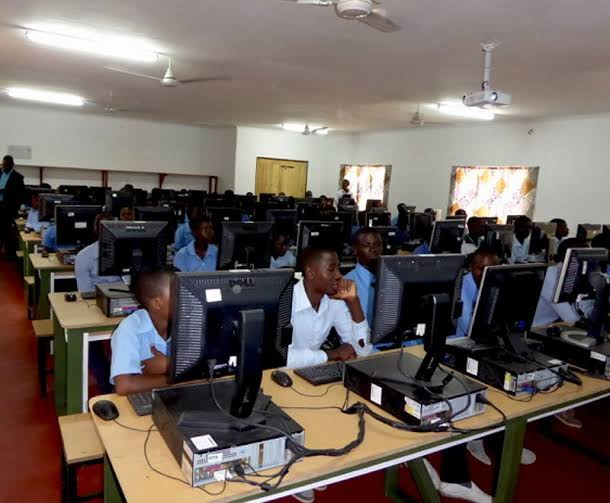

A student once used a smartphone every day but never wondered how apps, websites, games, and social media platforms were created. One day, curiosity led the student to learn about technology. Years later, that same student was building websites, analyzing data, and creating digital solutions. The technology we use every day is created by people who once started exactly where you are now.
Elective ICT focuses on information and communication technology, computing systems, digital tools, and problem-solving through technology. It introduces students to the world of computers, software, networks, and digital innovation.
As an SHS student, you may study topics such as:
Elective ICT can lead to careers such as:
Many students think ICT is only about learning how to use a computer. In reality, ICT is about creating solutions, solving problems, and building technologies that impact millions of people. Many of today's fastest-growing careers are connected to technology, artificial intelligence, data science, cybersecurity, cloud computing, and software development.
This is only a small introduction. If you want to understand how programmes connect to university courses, careers, opportunities, and future success, get a copy of:
The guide designed to help students make informed decisions about their future and discover opportunities they may never have considered.